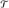
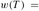
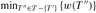

|
|
< Day Day Up > |
|
The two minimum-spanning-tree algorithms described in this section are elaborations of the generic algorithm. They each use a specific rule to determine a safe edge in line 3 of GENERIC-MST. In Kruskal's algorithm, the set A is a forest. The safe edge added to A is always a least-weight edge in the graph that connects two distinct components. In Prim's algorithm, the set A forms a single tree. The safe edge added to A is always a least-weight edge connecting the tree to a vertex not in the tree.
Kruskal's algorithm is based directly on the generic minimum-spanning-tree algorithm given in Section 23.1. It finds a safe edge to add to the growing forest by finding, of all the edges that connect any two trees in the forest, an edge (u, v) of least weight. Let C1 and C2 denote the two trees that are connected by (u, v). Since (u, v) must be a light edge connecting C1 to some other tree, Corollary 23.2 implies that (u, v) is a safe edge for C1. Kruskal's algorithm is a greedy algorithm, because at each step it adds to the forest an edge of least possible weight.
Our implementation of Kruskal's algorithm is like the algorithm to compute connected components from Section 21.1. It uses a disjoint-set data structure to maintain several disjoint sets of elements. Each set contains the vertices in a tree of the current forest. The operation FIND-SET(u) returns a representative element from the set that contains u. Thus, we can determine whether two vertices u and v belong to the same tree by testing whether FIND-SET(u) equals FIND-SET(v). The combining of trees is accomplished by the UNION procedure.
MST-KRUSKAL(G, w) 1 A ← Ø 2 for each vertex v ∈ V[G] 3 do MAKE-SET(v) 4 sort the edges of E into nondecreasing order by weight w 5 for each edge (u, v) ∈ E, taken in nondecreasing order by weight 6 do if FIND-SET(u) ≠ FIND-SET(v) 7 then A ← A ∪ {(u, v)} 8 UNION(u, v) 9 return A
Kruskal's algorithm works as shown in Figure 23.4. Lines 1-3 initialize the set A to the empty set and create |V| trees, one containing each vertex. The edges in E are sorted into nondecreasing order by weight in line 4. The for loop in lines 5-8 checks, for each edge (u, v), whether the endpoints u and v belong to the same tree. If they do, then the edge (u, v) cannot be added to the forest without creating a cycle, and the edge is discarded. Otherwise, the two vertices belong to different trees. In this case, the edge (u, v) is added to A in line 7, and the vertices in the two trees are merged in line 8.
The running time of Kruskal's algorithm for a graph G = (V, E) depends on the implementation of the disjoint-set data structure. We shall assume the disjoint-set-forest implementation of Section 21.3 with the union-by-rank and path-compression heuristics, since it is the asymptotically fastest implementation known. Initializing the set A in line 1 takes O(1) time, and the time to sort the edges in line 4 is O(E lg E). (We will account for the cost of the |V| MAKE-SET operations in the for loop of lines 2-3 in a moment.) The for loop of lines 5-8 performs O(E) FIND-SET and UNION operations on the disjoint-set forest. Along with the |V| MAKE-SET operations, these take a total of O((V + E) α(V)) time, where α is the very slowly growing function defined in Section 21.4. Because G is assumed to be connected, we have |E| ≥ |V| - 1, and so the disjoint-set operations take O(E α(V)) time. Moreover, since α(|V|) = O(lg V) = O(lg E), the total running time of Kruskal's algorithm is O(E lg E). Observing that |E| < |V|2, we have lg |E| = O(lg V), and so we can restate the running time of Kruskal's algorithm as O(E lg V).
Like Kruskal's algorithm, Prim's algorithm is a special case of the generic minimum-spanning-tree algorithm from Section 23.1. Prim's algorithm operates much like Dijkstra's algorithm for finding shortest paths in a graph, which we shall see in Section 24.3. Prim's algorithm has the property that the edges in the set A always form a single tree. As is illustrated in Figure 23.5, the tree starts from an arbitrary root vertex r and grows until the tree spans all the vertices in V. At each step, a light edge is added to the tree A that connects A to an isolated vertex of GA = (V, A). By Corollary 23.2, this rule adds only edges that are safe for A; therefore, when the algorithm terminates, the edges in A form a minimum spanning tree. This strategy is greedy since the tree is augmented at each step with an edge that contributes the minimum amount possible to the tree's weight.
The key to implementing Prim's algorithm efficiently is to make it easy to select a new edge to be added to the tree formed by the edges in A. In the pseudocode below, the connected graph G and the root r of the minimum spanning tree to be grown are inputs to the algorithm. During execution of the algorithm, all vertices that are not in the tree reside in a min-priority queue Q based on a key field. For each vertex v, key[v] is the minimum weight of any edge connecting v to a vertex in the tree; by convention, key[v] = ∞ if there is no such edge. The field π[v] names the parent of v in the tree. During the algorithm, the set A from GENERIC-MST is kept implicitly as
A = {(v, π[v]) : v ∈ V - {r} - Q}.
When the algorithm terminates, the min-priority queue Q is empty; the minimum spanning tree A for G is thus
A = {(v, π[v]) : v ∈ V - {r}}.
MST-PRIM(G, w, r) 1 for each u ∈ V [G] 2 do key[u] ← ∞ 3 π[u] ← NIL 4 key[r] ← 0 5 Q ← V [G] 6 while Q ≠ Ø 7 do u ← EXTRACT-MIN(Q) 8 for each v ∈ Adj[u] 9 do if v ∈ Q and w(u, v) < key[v] 10 then π[v] ← u 11 key[v] ← w(u, v)
Prim's algorithm works as shown in Figure 23.5. Lines 1-5 set the key of each vertex to ∞ (except for the root r, whose key is set to 0 so that it will be the first vertex processed), set the parent of each vertex to NIL, and initialize the min-priority queue Q to contain all the vertices. The algorithm maintains the following three-part loop invariant:
Prior to each iteration of the while loop of lines 6-11,
A = {(v, π[v]) : v ∈ V - {r} - Q}.
The vertices already placed into the minimum spanning tree are those in V - Q.
For all vertices v ∈ Q, if π[v] ≠ NIL, then key[v] < ∞ and key[v] is the weight of a light edge (v, π[v]) connecting v to some vertex already placed into the minimum spanning tree.
Line 7 identifies a vertex u ∈ Q incident on a light edge crossing the cut (V -Q, Q) (with the exception of the first iteration, in which u = r due to line 4). Removing u from the set Q adds it to the set V - Q of vertices in the tree, thus adding (u, π[u]) to A. The for loop of lines 8-11 update the key and π fields of every vertex v adjacent to u but not in the tree. The updating maintains the third part of the loop invariant.
The performance of Prim's algorithm depends on how we implement the min-priority queue Q. If Q is implemented as a binary min-heap (see Chapter 6), we can use the BUILD-MIN-HEAP procedure to perform the initialization in lines 1-5 in O(V) time. The body of the while loop is executed |V| times, and since each EXTRACT-MIN operation takes O(lg V) time, the total time for all calls to EXTRACT-MIN is O(V lg V). The for loop in lines 8-11 is executed O(E) times altogether, since the sum of the lengths of all adjacency lists is 2 |E|. Within the for loop, the test for membership in Q in line 9 can be implemented in constant time by keeping a bit for each vertex that tells whether or not it is in Q, and updating the bit when the vertex is removed from Q. The assignment in line 11 involves an implicit DECREASE-KEY operation on the min-heap, which can be implemented in a binary min-heap in O(lg V) time. Thus, the total time for Prim's algorithm is O(V lg V + E lg V) = O(E lg V), which is asymptotically the same as for our implementation of Kruskal's algorithm.
The asymptotic running time of Prim's algorithm can be improved, however, by using Fibonacci heaps. Chapter 20 shows that if |V| elements are organized into a Fibonacci heap, we can perform an EXTRACT-MIN operation in O(lg V) amortized time and a DECREASE-KEY operation (to implement line 11) in O(1) amortized time. Therefore, if we use a Fibonacci heap to implement the min-priority queue Q, the running time of Prim's algorithm improves to O(E + V lg V).
Kruskal's algorithm can return different spanning trees for the same input graph G, depending on how ties are broken when the edges are sorted into order. Show that for each minimum spanning tree T of G, there is a way to sort the edges of G in Kruskal's algorithm so that the algorithm returns T.
Suppose that the graph G = (V, E) is represented as an adjacency matrix. Give a simple implementation of Prim's algorithm for this case that runs in O(V2) time.
Is the Fibonacci-heap implementation of Prim's algorithm asymptotically faster than the binary-heap implementation for a sparse graph G = (V, E), where |E| = Θ(V)? What about for a dense graph, where |E| = Θ(V2)? How must |E| and |V| be related for the Fibonacci-heap implementation to be asymptotically faster than the binary-heap implementation?
Suppose that all edge weights in a graph are integers in the range from 1 to |V|. How fast can you make Kruskal's algorithm run? What if the edge weights are integers in the range from 1 to W for some constant W?
Suppose that all edge weights in a graph are integers in the range from 1 to |V|. How fast can you make Prim's algorithm run? What if the edge weights are integers in the range from 1 to W for some constant W?
Suppose that the edge weights in a graph are uniformly distributed over the half-open interval [0, 1). Which algorithm, Kruskal's or Prim's, can you make run faster?
Suppose that a graph G has a minimum spanning tree already computed. How quickly can the minimum spanning tree be updated if a new vertex and incident edges are added to G?
Professor Toole proposes a new divide-and-conquer algorithm for computing minimum spanning trees, which goes as follows. Given a graph G = (V, E), partition the set V of vertices into two sets V1 and V2 such that |V1| and |V2| differ by at most 1. Let E1 be the set of edges that are incident only on vertices in V1, and let E2 be the set of edges that are incident only on vertices in V2. Recursively solve a minimum-spanning-tree problem on each of the two subgraphs G1 = (V1, E1) and G2 = (V2, E2). Finally, select the minimum-weight edge in E that crosses the cut (V1, V2), and use this edge to unite the resulting two minimum spanning trees into a single spanning tree.
Either argue that the algorithm correctly computes a minimum spanning tree of G, or provide an example for which the algorithm fails.
Let G = (V, E) be an undirected, connected graph with weight function w : E → R, and suppose that |E| ≥ |V| and all edge weights are distinct.
A second-best minimum spanning tree is defined as follows. Let  be the set of all spanning trees of G, and let T′ be a minimum spanning tree of G. Then a second-best minimum spanning tree is a spanning tree T such that  .
Show that the minimum spanning tree is unique, but that the second-best minimum spanning tree need not be unique.
Let T be a minimum spanning tree of G. Prove that there exist edges (u, v) ∈ T and (x, y) ∉ T such that T - {(u, v)} ∪ {(x, y)} is a second-best minimum spanning tree of G.
Let T be a spanning tree of G and, for any two vertices u, v ∈ V, let max[u, v] be an edge of maximum weight on the unique path between u and v in T. Describe an O(V2)-time algorithm that, given T, computes max[u, v] for all u, v ∈ V.
Give an efficient algorithm to compute the second-best minimum spanning tree of G.
For a very sparse connected graph G = (V, E), we can further improve upon the O(E + V lg V) running time of Prim's algorithm with Fibonacci heaps by "pre-processing" G to decrease the number of vertices before running Prim's algorithm. In particular, we choose, for each vertex u, the minimum-weight edge (u, v) incident on u, and we put (u, v) into the minimum spanning tree under construction. We then contract all chosen edges (see Section B.4). Rather than contracting these edges one at a time, we first identify sets of vertices that are united into the same new vertex. Then, we create the graph that would have resulted from contracting these edges one at a time, but we do so by "renaming" edges according to the sets into which their endpoints were placed. Several edges from the original graph may be renamed the same as each other. In such a case, only one edge results, and its weight is the minimum of the weights of the corresponding original edges.
Initially, we set the minimum spanning tree T being constructed to be empty, and for each edge (u, v) ∈ E, we set orig[u, v] = (u, v) and c[u, v] = w(u, v). We use the orig attribute to reference the edge from the initial graph that is associated with an edge in the contracted graph. The c attribute holds the weight of an edge, and as edges are contracted, it is updated according to the above scheme for choosing edge weights. The procedure MST-REDUCE takes inputs G, orig, c, and T, and it returns a contracted graph G′ and updated attributes orig′ and c′ for graph G′. The procedure also accumulates edges of G into the minimum spanning tree T.
MST-REDUCE(G, orig, c, T) 1 for each v ∈ V[G] 2 do mark[v] ← FALSE 3 MAKE-SET(v) 4 for each u ∈ V[G] 5 do if mark[u] = FALSE 6 then choose v ∈ Adj[u] such that c[u, v] is minimized 7 UNION(u, v) 8 T ← T ∪ {orig[u, v]} 9 mark[u] ← mark[v] ← TRUE 10 V[G′] ← {FIND-SET(v) : v ∈ V[G]} 11 E[G′] Ø 12 for each (x, y) ∈ E[G] 13 do u ← FIND-SET(x) 14 v ← FIND-SET(y) 15 if (u, v) ∈ E[G′] 16 then E[G′] ← E[G′] ∪ {(u, v)} 17 orig′ [u, v] ← orig[x, y] 18 c′ [u, v] ← c[x, y] 19 else if c[x, y] < c′ [u, v] 20 then orig′ [u, v] ← orig[x, y] 21 c′ [u, v] ← c[x, y] 22 construct adjacency lists Adj for G′ 23 return G′, orig′, c′, and T
Let T be the set of edges returned by MST-REDUCE, and let A be the minimum spanning tree of the graph G′ formed by the call MST-PRIM(G′, c′, r), where r is any vertex in V[G′]. Prove that T ∪ {orig′ [x, y] : (x, y) ∈ A} is a minimum spanning tree of G.
Argue that |V[G′]| ≤ |V| /2.
Show how to implement MST-REDUCE so that it runs in O(E) time. (Hint: Use simple data structures.)
Suppose that we run k phases of MST-REDUCE, using the outputs G′, orig′, and c′ produced by one phase as the inputs G, orig, and c to the next phase and accumulating edges in T. Argue that the overall running time of the k phases is O(k E).
Suppose that after running k phases of MST-REDUCE, as in part (d), we run Prim's algorithm by calling MST-PRIM(G′, c′, r), where G′ and c′ are returned by the last phase and r is any vertex in V [G′]. Show how to pick k so that the overall running time is O(E lg lg V). Argue that your choice of k minimizes the overall asymptotic running time.
For what values of |E| (in terms of |V|) does Prim's algorithm with preprocessing asymptotically beat Prim's algorithm without preprocessing?
A bottleneck spanning tree T of an undirected graph G is a spanning tree of G whose largest edge weight is minimum over all spanning trees of G. We say that the value of the bottleneck spanning tree is the weight of the maximum-weight edge in T.
Argue that a minimum spanning tree is a bottleneck spanning tree.
Part (a) shows that finding a bottleneck spanning tree is no harder than finding a minimum spanning tree. In the remaining parts, we will show that one can be found in linear time.
Give a linear-time algorithm that given a graph G and an integer b, determines whether the value of the bottleneck spanning tree is at most b.
Use your algorithm for part (b) as a subroutine in a linear-time algorithm for the bottleneck-spanning-tree problem. (Hint: You may want to use a subroutine that contracts sets of edges, as in the MST-REDUCE procedure described in Problem 23-2.)
In this problem, we give pseudocode for three different algorithms. Each one takes a graph as input and returns a set of edges T. For each algorithm, you must either prove that T is a minimum spanning tree or prove that T is not a minimum spanning tree. Also describe the most efficient implementation of each algorithm, whether or not it computes a minimum spanning tree.
MAYBE-MST-A(G, w) 1 sort the edges into nonincreasing order of edge weights w 2 T ← E 3 for each edge e, taken in nonincreasing order by weight 4 do if T - {e} is a connected graph 5 then T ← T - e 6 return T
MAYBE-MST-B(G, w) 1 T ← Ø 2 for each edge e, taken in arbitrary order 3 do if T ∪ {e} has no cycles 4 then T ← T ∪ e 5 return T
MAYBE-MST-C(G, w) 1 T ← Ø 2 for each edge e, taken in arbitrary order 3 do T ← T ∪ {e} 4 if T has a cycle c 5 then let e′ be the maximum-weight edge on c 6 T ← T - {e′} 7 return T
|
|
< Day Day Up > |
|